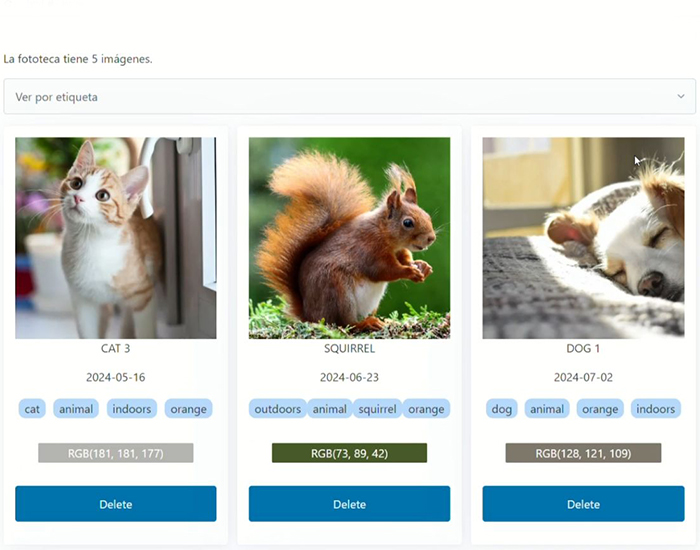
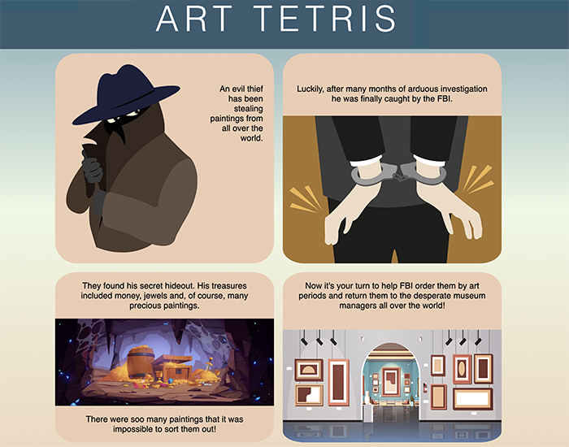
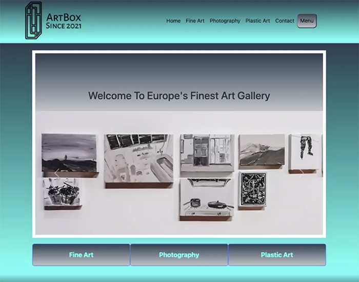
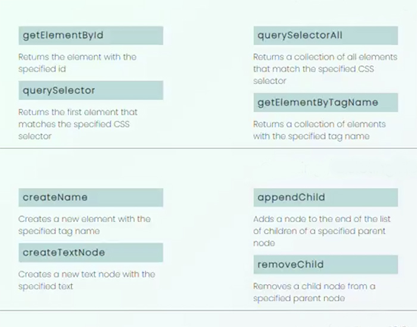
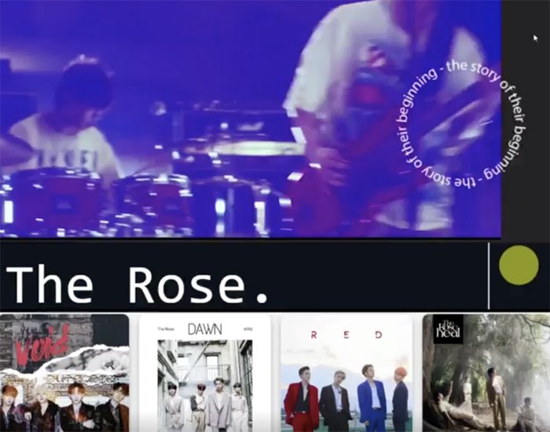
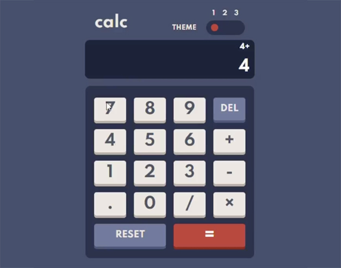
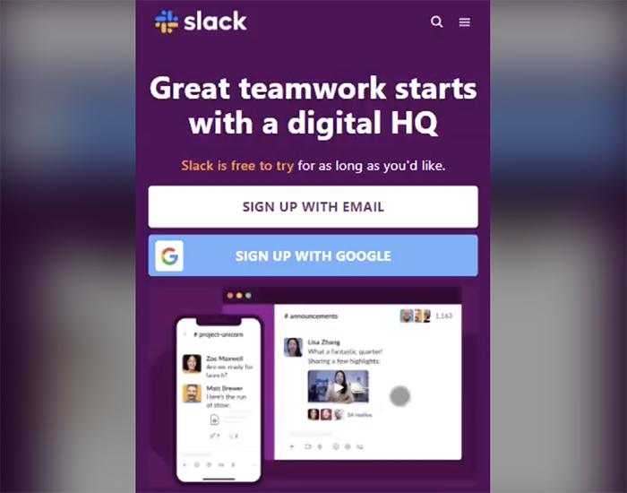

Welcome to my Portfolio!
This is Vanya
An aspiring, well-rounded full-stack developer in the making.
These are some of my projects
Emotionary
A MERN stack application designed to enhance self-awareness and emotional well-being. Developed as a final project at the Ironhack Bootcamp, Emotionary allows users to track and analyze their emotions, connect with therapists in real-time, and visualize emotional trends through interactive charts. With full CRUD functionality and calendar integration, users can manage and review their emotional entries effectively. This project was a collaborative effort, utilizing tools like Figma, Trello, and Git for a smooth development process.
Fototeca
A dynamic web application designed for managing image collections. Developed using Node.js, Express, and EJS, the application allows users to add, search, filter, and delete images seamlessly. Key features include real-time search, tag management with Tagify, and color extraction from images using color-thief-node. The project emphasizes user-friendly interaction and robust error handling, ensuring a smooth and intuitive experience for managing image data and tags.
Art Tetris
A game that blends art education with classic gameplay. Developed as a key project in my coding journey, it challenges players to align falling blocks, each representing an artistic period. Using intuitive keyboard controls, players must strategically position the blocks as the pace accelerates, making the game both engaging and educational. Art Tetris not only entertains but also familiarizes users with significant art movements, merging learning with fun.
ArtBox
ArtBox is a comprehensive gallery management application developed with JavaScript, Handlebars.js, Bootstrap, Express, Node.js, MongoDB, Nodemailer, HTML, CSS, and Chart.js. The platform features a dynamic homepage carousel for gallery images and allows users to view and manage exhibitions. Admins can handle exhibition operations, approve artist applications, and monitor gallery statistics, while artists can manage their profiles, apply to exhibit, and track their applications. The app includes route-specific access controls and session-based authentication. Key learnings from the project include the importance of agile development practices and balancing functionality with project deadlines.
DOM Cheatsheet
A project designed to simplify and enhance the learning of the Document Object Model (DOM). Created as a helpful resource for those navigating DOM concepts, it offers a visually engaging and user-friendly guide. With a thoughtful color palette and fonts, this cheatsheet aims to make the learning process both clear and enjoyable.
The Rose Web
A dynamic home page designed for a favorite rock band, showcasing advanced CSS animations. This project demonstrates the application of animation techniques to enhance the visual appeal and user interaction of the site. The use of these animations adds a sophisticated and engaging layer to the web experience.
Calculator
A project that combines robust functionality with dynamic styling. Developed using test-driven development (TDD), it features comprehensive logic handling for various operations, including DEL, RESET, and "=" functions. Users can switch between three distinct styles via a dynamic CSS toggle. The app efficiently manages data with attributes and provides a seamless user experience through its customizable design.
Slack App
The project involves developing a Slack app using Tailwind CSS to enhance its mobile view, with ongoing work to implement additional media queries. Tailwind CSS is being explored for its flexibility and creativity, offering a more dynamic approach compared to the structured nature of Bootstrap. This project reflects a blend of practical design skills and creative freedom, leveraging Tailwind CSS's strengths to create an engaging and visually appealing mobile interface.
Let's work together...
You can find me here: